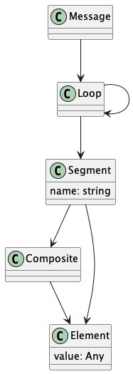

Context: Use Cases¶
C4 suggests we look at Context, Container, Component, Code. (See https://c4model.com).
This section defines the context by describing the Actors and their Use Case Scenarios.
The Data Model section provides an overview of some of the key data entities.
For details on the Containers and Components, see Architecture: Containers and Components.
Fore more about Code, see Design Notes.
Actors¶
There are two actors.
Developer
This person creates and modifies definitions of X12 transactions (e.g., 270 Eligibility) as Python class definitions.
They can then build EDI applications which depend on the X12 message structures.
EDI Application
An EDI application will import the class definitions. These definitions are used to deserialize X12 messages for analysis or processing. The application can use the message class definitions to serialize messages in EDI exchange format.
Use Case Scenarios¶
The following use cases are explored in detail:
Deserialize A Message (Also called “parsing” or “loading”)
Serialize A Message (Also called “unparsing” or “dumping”)
Other use cases are combinations of these. For example, deserializing a message to change the date and serializing the resulting message.
Define An X12 Structure¶
Actor locates the IG (Implementation Guide) that describes a message. This has the loops, segments, composites, and data elements that comprise the message. It has the various data element definitions, syntax, and usage rules, as well as the repetition factors that are permitted.
The PyX12 project has XML files built from from IG’s.
For example, 270.4010.X092.A1.xml.
This file is paired with data element definitions and code definitions.
See https://github.com/azoner/pyx12/tree/master/pyx12/map
TigerShark tools can build JSONSchema and Python Modules from the XML definitions. Alternatively, the Python classes can be defined manually from the details in the IG.
Because of the reuse of segment and element names,
each loop definition becomes an important namespace for disambiguating
reused segment names. A specific example is the HL
segment, which appears in many loops, sometimes with
slightly different element names, based on the loop context.
Deserialize A Message¶
An application should be able to import a module containing a message definition class. The application can then use the class definitions to parse a message, creating an instance of the class.
The idea is
import MessageClass
from x12 import Source, X12Parser
source = Source(some_path.read_text())
parser = X12Parser(MessageClass)
msg = parser.parse(source)
The source is a wrapper around the input text to provide a “look-ahead” capability.
The parser walks through the MessageClass definition to locate the structure
and map source text to the structure.
The resulting msg object is an instance of a subclass of Message
with attributes based on the loop/segment/composite/element structure of the specific message type.
Serialize A Message¶
An application imports the module with message definition classes.
The application creates a message object as a (long) Python statement. Or, an application converts some intermediate representation in JSON notation into a message object.
When testing healthcare applications, EDI messages are oten tweaked to change an attribute, for example, the date of submission.
The intent is to locate eacn instance of the various containing loops, and then change an element value of a named segment within a loop.
Data Model¶
An X12 Message contains Loops. Each Loop is a recursive structure that contains Loops and Segments. An Segment contains Composites (groups of Elements) and atomic Elements.
Here’s the structure:

It’s important to note that only segments have names, and only elements have values.
Further, segment names are reused by loops. This leads to the following – more realistic – depiction of the structure.

The SegmentX segment definition is repeated
in each loop, often with small but significant differences,
based on the distinct context.
This leads to the following data model consideration:
A Loop is a Namespace
This then leads to questions on how best to implement “loop-as-namespace”. This is the topic of the Loops as Namespace design note.
The short answer is we create long names like LOOP_1_SEGMENT_X and LOOP_2_SEGMENT_X` to distinguish the two names.